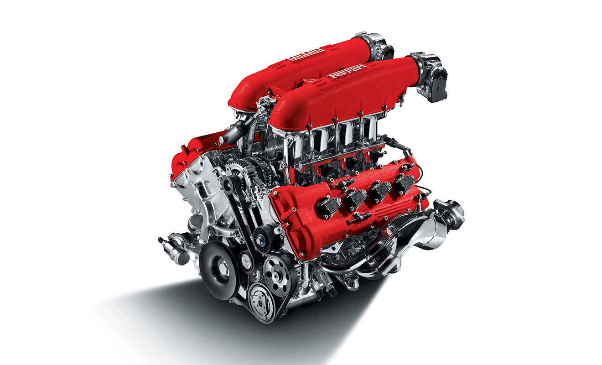

Двигатели
Двигатели подразделяют на первичные и вторичные.
К первичным относят непосредственно преобразующие природные энергетические
ресурсы в механическую работу, а ко вторичным — преобразующие энергию,
выработанную или накопленную другими источниками.

К первичным двигателям (ПД) относятся ветряное колесо, использующее силу
ветра, водяное колесо и гиревой механизм — их приводит в действие сила
гравитации (падающая вода и сила притяжения), тепловые двигатели — в них
химическая энергия топлива или ядерная энергия преобразуются в другие виды
энергии[3]. Ко вторичным двигателям (ВД) относятся электрические,
пневматические и гидравлические двигатели.
Proverk